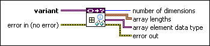

Get Array Information VI
Owning Palette: Data Type Parsing VIs
Requires: Base Development System
Retrieves array information from the data type stored in variant. This VI returns an error if variant does not contain an array.
 | Note This VI does not return information about values stored in the array. |

 Add to the block diagram Add to the block diagram |
 Find on the palette Find on the palette |